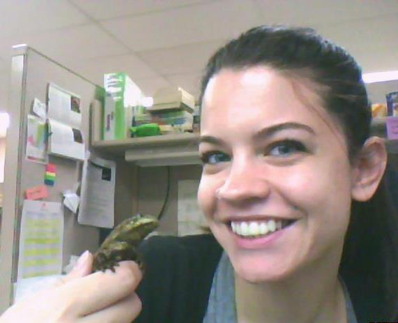
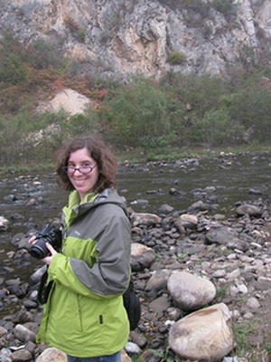
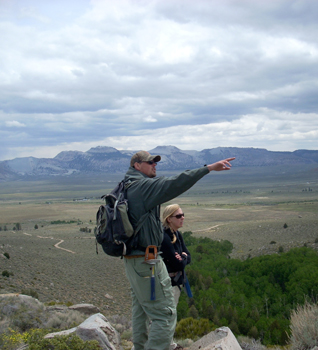

Andrew Connolly
M.S. Student
Education
B.S. Geology, University of Kansas, 2012
Advisors
Dr. Stephen Hasiotis
Dr. Larry Martin
Research
I am interested in the biogeographic range of Mosasaurs, as well as the paleobiogeographical effects of the parietal foramen in Mosasaurs and Permian reptiles.
Nicole Dzenowski
Ph.D. Student
Education
B.A. Geology, Youngstown State University, 2010
B.S. Biology, Youngstown State University, 2010
M.S. Geology, Ohio University, 2012
Advisor
Dr. Stephen Hasiotis
Research
I am interested in studying the traces of both extant and extinct vertebrates and their uses in the interpretation and reconstruction of paleoecologies and paleoenvironments. My current research includes studying traces produced by a modern caecilian species (Herpele squalastoma), how these traces are affected by variations in environmental conditions, and how the traces can be used to better understand ancient environments. I will also be studying large vertebrate burrows from the Permian in order to interpret the paleoenvironment, the behavior the traces represent, and their potential tracemaker.
Publications
Dzenowski, N.D., Hembree, D.I., 2012. Examining local climate variability in the Late Pennsylvanian through paleosols: an example from the Lower Conemaugh Group of southeastern Ohio. Geosciences v. 2, p. 260-276.
Amanda Falk
Ph.D. Student
Education
B.S. Biology, Lake Superior State University, 2007
M.S. Geology, University of Kansas, 2009
Advisors
Dr. Stephen Hasiotis
Dr. Larry Martin
Dissertation Title
Anatomy and function of bird feet--the effect of behavior, medium and avian morphotype on trackway morphology
Research
I am interested in the tracks and traces of birds, both fossil and modern, as well as the general gross morphology and functional morphology of both fossil and ancient birds. I am also interested the evolution of avian migration, avian osteology, and the origin and evolution of birds. I also have minor interests in paleoecology and vertebrate anatomy (mainly in the functional morphology of animals other than birds). My current research focuses on analyzing the behaviors of Early Cretaceous bird tracks from the Haman Formation of South Korea, re-describing and interpreting bird tracks from several areas in China, as well as performing a series of morphologic measurements on the feet of fossil and modern birds to try and reconstruct soft tissue structures on the feet of Early Cretaceous fossil birds. I am also studying the behaviors and parameters under which modern bird tracks are produced.
Publications
Gong, E., Martin, L. D., Burnham, D. A., Falk, A. R., 2010. The birdlike raptor Sinornithosaurus was venomous. PNAS, v. 107(2), p. 766–768 (Cover paper).
Alexander, D. E., Gong, E., Martin, L. D., Burnham, D. A., Falk, A. R., 2010. Model tests of gliding with different hindwing configurations in the four-winged dromaeosaurid Microraptor gui. PNAS, v. 107(7), p. 2972–2976.
Falk, A. R., Hasiotis, S. T. and Martin, L.D., 2010. Feeding traces associated with bird tracks from the Lower Cretaceous Haman Formation, Republic of Korea. Palaois, v. 25, p. 730–741.
Falk, A. R. Tracking Mesozoic birds around the world. 2011. Journal of Systematic Palaeontology, v. 9(1) p. 85-90.
Falk, A. R., Martin, L.D. and Hasiotis, S. T., 2011. A morphologic criterion to distinguishing bird tracks. Journal of Ornithology, v. 152, p. 701–716.
Ph.D. Student
Education
B.S. Anthropology, Archaeology concentration, Mercyhurst University, 2007
B.S. Geology, Mercyhurst University, 2007
M.S. Geology, Colorado School of Mines, 2010
Advisor
Dr. Stephen Hasiotis
Dissertation Title
An integrated approach to the application of ichnopedological facies: examples from marginal-marine to continental depositional environments.
Research
My research focuses on the interaction between organisms and soil development in different depositional environments. Such an understanding has the potential to create paradigm shift in our understanding of trace fossil importance in the geologic record and to improve the understanding of how climatic changes affect invertebrate populations. My studies will provide data of value to paleoclimatic studies, such as an improved understanding of changes in the climate systems in the continental interiors, regional wet-dry variations, relative carbon dioxide changes, relative temperature changes, weathering rate changes, and organic matter transfer from continents into deep oceans. The ultimate goal of my research is to work toward an integrated ichnopedological facies classification system, which can be applied universally to any continental environment
Current Research Projects:
The ichnopedological facices of the Permian Halgaito Formation of the Cutler Group, southeast Utah.
The hydrostratigraphy and ichnology of the Trinity aquifer group, south-central Texas.
Ichnology of the Asio-Mina-Tamba Belt, western Japan
The use of 3-D printing in ichnology and Earth-Science education
Publications
Birgenheier, L.P., Plink-Björklund, P., Vanden Berg, M.D., Rosenburg, M., Toms, L., and Golab, J.A., 2013, A Genetic Stratigraphic Framework of the Green River
Formation, Uinta Basin, Utah: The Impact of Climatic Controls on Lake Evolution. Abstracts Volume, American Association of Petroleum Geologists Annual Meeting, May 19-22, Pittsburgh, PA.
Clark, A.K., Blome, C.D., Golab, J.A., and Morris, R.R., 2012. The Geologic Framework and Hydrostratigraphy of Guadalupe River State Park and Honey Creek Natural Area, Kendall and Comal Counties, Texas. Poster presentation, National GSA Conference, November 4-7, Charlotte, NC.
Clark, A.K., Blome, C.D., Morris, R.R., and Golab, J.A., 2012. Geologic Map of the Guadalupe River State Park and Honey Creek State Natural Area, Comal and Kendall Counties, Texas, U.S. Geological Survey Open-File Map 2012-XXXX, in review.
Blome, C.D., Lidke, D.J., Wahl, R.R., and Golab, J.A., 2012. Geologic Map of the Chickasaw National Recreational Area, Oklahoma. U.S. Geological Survey Scientific Investigations Map 2012-XXXX, 44 p., in review.
Plink-Björklund, P., Birgenheier, L.P., and Golab, J.A., 2012. Signature of Climate Control in Early Eocene Fluvial Channel Systems. Abstracts Volume, American Association of Petroleum Geologists Annual Meeting, April 22-25, 2012, Long Beach, CA.
Clark, A.K., Blome, C.D., Morris, R.R., and Golab, J.A.*, 2011. The Hydrostratigraphy of the Guadalupe River State Park and Honey Creek State Natural Area, Comal and Kendall Counties, Texas. Presentation, National GSA Conference, October 9-12, Minneapolis, MN. *Presenting Author
Blome, C.D., Clark, A.K., and Golab, J.A., 2011. Hydrostratigraphy of the Trinity Aquifer, south-central Texas: A Geologic mapper's perspective. Presentation, National GSA Conference, October 9-12, Minneapolis, MN.
Golab, J.A., Birgenheier, L.P., and Plink-Björklund, P., 2010. Ichnopedological facies of the Colton and Lower-Middle Green River Formations: Implications for continental paleoclimate studies. Poster presentation, National GSA Conference, October 31 - November 3, Denver, CO.
Plink-Björklund, P., Birgenheier, L.P., and Golab, J.A., 2010. Separating Allogenic and Autogenic Controls in a Super-Greenhouse Fluvial System. Abstracts Volume, American Association of Petroleum Geologists Annual Meeting, April 11-14, New Orleans, LA.
Birgenheier, L.P., Plink-Björklund, P., Golab, J.A., 2009. Geochemical and sedimentary record of climate change from the Paleocene-Eocene Colton and Green River Formations, Southwestern Uinta Basin, Utah. Abstracts Volume, American Association of Petroleum Geologists Annual Meeting, June 7-10, New Orleans, LA.
Golab, J.A., and Breckenridge, A., 2008. The relationship between grain size variation and the retreat of the Laurentice Ice Sheet taken from Lake Superior Core BH02-5P, poster presentation, North-Eastern GSA, March 27-29, Buffalo, NY.
Sean Hammersburg
M.S. Student
Education
B.S. Geology, Central Michigan University, 2011
Advisor
Dr. Stephen Hasiotis
Research
I am studying middle Cambrian marine trace fossils from the Spence Shale Member of the Langston Formation from the Wellsville Mountains, Utah.
Adam Jackson
Ph.D. Student
Education
B.S. Marine Biology, University of California, Santa Cruz, 2005
M.S. Environmental Systems, Geology option, Humboldt State University, 2011
Advisor
Dr. Stephen Hasiotis
Dissertation Title
Neo and Paleoichnology of high and low latitude shallow marine deposits, Antarctica and North America
Research Projects
Mortichnia of the common housefly, Musca domestica. A modern occurrence of a sandy intertidal Nereites (Phyllodocites).
Ichnologic Signature of Disturbance and Recovery from an Oceanic Flood Deposit on the Eel Shelf, northern California (Masters Thesis, Paper in Prep)
Re-emergence of a buried Miocene forrest in the intertidal zone of Point St. George, California; An in-situ continental and secondarily marine Teredolites ichnofacies.
Ichnological analysis of marine to marginal-marine/ deltaic sequences from the MacKellar Formation, Antarctica.
Comparative ichnology of modern nearshore arthropod trackways, and reinvestigation of trackway, Ceonobichnius currani, produced by land hermit crabs.
Publications
Jackson, A. M., Hasiotis, S.T., Flaig, P.P., and Isbell, J.L., 2012. Trace fossils and sedimentology indicate a shallow marine deltaic environment for the Lower Permian Mackellar Formation at Turnabout Ridge and Buckley Island, Beardmore Glacier, Central Transantarctic Mountains (CTAM), Antarctica. Talk accepted for GSA National Meeting, Charlotte, NC.
Hasiotis, S.T., Flaig, P.P., and Jackson, A. M., 2012. Horseshoe crabs lived in Permo-Triassic Antarctic freshwater rivers and lakes: Trace fossil evidence from the Buckley and Fremouw Formations, Beardmore Glacier Area, Central Transantarctic Mountains (CTAM), Antarctica. Talk accepted for GSA National Meeting, Charlotte, NC.
Hasiotis, S.T., Flaig, P.P., Jackson, A.M., and Isbell, J.L., 2012. First report of marine trace fossils from fluvio-deltaic-shallow marine deposits in the Lower Permian Mackellar Formation, Beardmore Glacier Area, Central Transantarctic Mountains, Antarctica: Salinity stressed aquatic conditions. Talk presented at 34th International Geological Congress, Brisbane, Australia.
Jackson, Adam. M., Quaternary Trace Fossil Assemblages on the Eel River Shelf, northern California. Poster presented at AAPG 2010, New Orleans, LA. April 12 2010.
Jackson, C. M., Ladinsky, T. C., Graehl, N. A., Caldwell, D. J., Mielke, J. L., and Jackson, A. M., Origin and age of Pleistocene shelly marine deposits, Trinidad Headlands, Humboldt County northwestern California, USA. Presented at 2010 GSA Cordilleran Section and AAPG Pacific Section joint meeting, June 11, 2010
Reid, Jane A., Adam Jackson, Mark Zimmermann, Chris Jenkins, and S. Jeffress Williams, in prep, usSEABED Pacific Coast (Alaska, Hawaii), offshore surficial-sediment data release: U.S. Geological Survey Data Series
Reid, Jane A., Mark Zimmermann, Nadine Golden, Adam Jackson, S. Jeffress Williams, Matthew A. Arsenault, and Chris Jenkins, 2008, Surficial seabed characteristics of the United States: Focus on Alaska, presentation made at GeoHab Annual Meeting, Sitka AK, April-28-May 2, 2008
Reid, Jane A., Mark Zimmermann, Adam Jackson, and Chris Jenkins, 2007, Alaska's surficial seabed characteristics: Marine Habitat Mapping Technology Workshop for Alaska, April 2-4, 2007, Anchorage, AK
Reid, Jane A. Nadine E. Golden, Mark Zimmermann, Adam Jackson, Monica N. Iglecia, and Chris Jenkins, 2006, The integration of Alaskan surficial seabed characteristics using the usSEABED knowledge system, poster presented at Marine Science in Alaska 2006 Symposium, January 22-25, Anchorage, AK
Reid, J.A., Reid, J.M., Jenkins, C.J., Zimmermann, M., Williams, S.J., and Field, M.E., 2006, usSEABED: Pacific Coast (California, Oregon, Washington) offshore surficial-sediment data release: U.S. Geological Survey Data Series 182, version 1.0. Online at http://pubs.usgs.gov/ds/2006/182/ (significant non-author contributions)